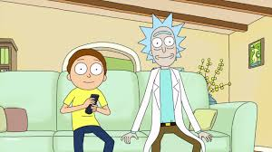

Rick and Morty Palettes
This was just a fun morning exercise. Let’s mix multiple images to make a palette of their principal colors using k-means. We’ll also use the totally awesome list-columns concept to put each image’s jpeg data into a data frame of lists that we can map to a function that turns the jpeg data into a list of palette colors in a new data frame.
This more-or-less copies http://www.milanor.net/blog/build-color-palette-from-image-with-paletter/ with the added twist of using multiple images before creating the palette. We’ll also get into the weeds a bit more with dissecting the images. I wanted to see if some cartoon show palettes using this method matched those in the ggsci package. Did the authors use the algorithmic approach I will use here? Will my approach look any better? Don’t know. I decided to use “Rick and Morty” because my kids like it. I would certainly never watch such drivel. I’m a scientist.
For the record, the one pop culture derived palette I really like is the Wes Anderson palette and on CRAN. These are presumably lovingly curated and created, not like the ones created by the stupid robot I use here.
The drawback to using K-means to create palettes from images is that it’s likely that none of the colors created are actually in the image. They just represent the mathematical centers of the clusters of colors.
Load libraries.
library(tidyverse)
library(jpeg) #import images
library(scales) #just for for the show_col() function
library(ggsci) #to compare my palettes to its palettes
library(ggfortify) #to support kmeans plots
library(gridExtra) #multiple plots on a pageLoad mulitple images. They are all Google image search thumbnails so the size is the same. This matters since we are combining images. A larger image would have a disproportional weight in our analysis.
I first thought that, since I am combining multiple images to get one palette, I needed to tile the images then process. No. We just care about the pixel color values so it really doesn’t matter what position they are in. The most efficient approach is to just chain all the RGB values together. Duh. Still we want to do some work with the individual images so let’s label them.
rm_list<-list()
for (n in 1:6){
img<-jpeg::readJPEG(paste0("img/rm",n,".jpg"))
R<-as.vector(img[,,1])
G<-as.vector(img[,,2])
B<-as.vector(img[,,3])
rm_list<-bind_rows(data_frame(img=n,R,G,B),rm_list) %>%
arrange(img)
}
rm_list <- left_join(rm_list,
data_frame(
img = c(1, 2, 3, 4, 5, 6),
name = c("Schwifty","Portal","Cable",
"Family", "Outdoor", "Wedding")
))Show Me What You Got
I chose the images from Google image search to be representative of varying but typical scenes.
 Cable
Family
Wedding
 Outdoor
Outdoor
 Portal
Portal
Schwifty
For fun let’s do some density plots of the color values.
#make data tidy first
rm_tidy <- rm_list %>% gather("color","level",-img,-name)
ggplot(rm_tidy,aes(x=level,fill=color))+
geom_density(alpha=0.7) +
scale_fill_manual(values=c("blue","green","red")) +
theme_void()
We can see some evidence of bimodality, a preference for very bright and very dark hues. Red is more often cranked to the max, while blue is much more evenly distributed. Perhaps that is typical of the limited palette of cartoons or just a function of the small number of frames I chose.
ggplot(rm_tidy,aes(x=level,fill=color))+
geom_density(alpha=0.7) +
scale_fill_manual(values=c("blue","green","red")) +
facet_wrap(~name)+
theme_void()
It’s interesting to compare “Cable” with “Family.” Both images share the same backdrop but “Family” is much darker.
Make the Palettes
When I was a kid with watercolors I wanted to come up with a name for the filthy color that resulted when I mixed all the colors together. I called it (trigger warning) “Hitler” (but, really, brown). What is the color that results when we average all the RGB values? What named R colors resemble it? It looks to me like it’s between “cornsilk4”" and “darkkhaki.”"
blend_color<-rm_list %>%
summarise(R=mean(R),G=mean(G),B=mean(B)) %>%
rgb()
show_col(c("cornsilk4",blend_color,"darkkhaki"))
Let’s call it “desertkhaki” which, hopefully, is not a trigger word.
Now, for the fun part. In the Wes Anderson palette set, each movie get’s a different palette. Let’s make palettes for each of the images, which I chose for their distinctiveness.
For me, the good thing about open source is that I can stand on the shoulders of giants in the community. R also makes very muscular analysis trivally simple. On the other hand, it makes “script kiddies” like me potentially dangerous. I can only describe k-means in the most general terms but can run it in a snap.
num_colors = 16
pal_schwifty <- rm_list %>%
filter(name=="Schwifty") %>%
select(R,G,B) %>%
kmeans(centers = num_colors, iter.max = 30) %>%
.$centers %>%
rgb()
show_col(pal_schwifty)
For data plotting the separation between some of these colors is too small. I think 9 colors will suffice.
num_colors = 9
pal_schwifty <- rm_list %>%
filter(name=="Schwifty") %>%
select(R,G,B) %>%
kmeans(centers = num_colors, iter.max = 30) %>%
.$centers %>%
as.tibble() %>%
{.}## Warning: `as.tibble()` is deprecated, use `as_tibble()` (but mind the new semantics).
## This warning is displayed once per session.show_col(rgb(pal_schwifty))
For plotting purposes I would like use these colors in order of intensity. Sorting colors is a topic in itself but here we’ll do it quick and simple.
pal_schwifty %>%
mutate(saturation=rowSums(.[1:3])) %>%
arrange(saturation) %>%
rgb() %>%
show_col()
That’s about right. Let’s put it all together. Go through all the images to create a series of palettes.
#function to turn a table of RGB values to an ordered list of colors
gen_pal <- function(rgb_table) {
num_colors = 9
pal <- rgb_table %>%
select(R, G, B) %>%
kmeans(centers = num_colors, iter.max = 30) %>%
.$centers %>%
as.tibble() %>%
mutate(saturation = rowSums(.[1:3])) %>%
arrange(saturation) %>%
rgb()
return(pal)
}#now make list columns, which are totally awesome, for each palette
palette_rick<-rm_list %>%
group_by(name) %>%
select(-img) %>%
nest(.key="rgb") %>%
transmute(name=name,pal= map(rgb,gen_pal))
palette_rick## # A tibble: 6 x 2
## name pal
## <chr> <list>
## 1 Schwifty <chr [9]>
## 2 Portal <chr [9]>
## 3 Cable <chr [9]>
## 4 Family <chr [9]>
## 5 Outdoor <chr [9]>
## 6 Wedding <chr [9]>#a function to extract the individual palettes, given a name.
extract_pal<-function(palette_list,pal_name){
pal<-palette_list %>% filter(name==pal_name) %>%
select(pal) %>%
unlist() %>%
as.vector()
return(pal)
}plot_one<-function(pal_name){
tmp <- palette_rick %>% unnest() %>% filter(name==pal_name)
g<- ggplot(tmp,aes(pal,fill=pal)) + geom_bar() +
scale_fill_manual(values=tmp$pal,guide=F) +
theme_void()+ggtitle(pal_name)
return (g)
}
lapply(palette_rick$name,plot_one) %>%
grid.arrange(grobs=.)
Finally, let’s do what we said we’d do at the beginning, put all these images together and add it to our list column of palettes.
multi_img_pal <- gen_pal(rm_list)
palette_rick<-data_frame(name="all",pal=list(multi_img_pal)) %>% bind_rows(palette_rick)
show_col(multi_img_pal)
Not too bad. I’m glad something resembling Rick’s hair makes it into the list. Compare it to the ggsci package Rick and Morty palette. Here we see the weaknesses of an algorithmic approach. ggsci is more interesting since it has more color diversity and vividness. I assume they were hand selected. You can see Rick’s hair and Morty’s shirt color.
show_col(ggsci::pal_rickandmorty()(9))
Since the (rather flimsy) point of this excercise is to make palettes for data graphics, let’s make some plots.
#use the example in help for dplyr::gather
stocks <- data.frame(
time = as.Date('2009-01-01') + 0:9,
W = rnorm(10, 0, 1),
X = rnorm(10, 0, 1),
Y = rnorm(10, 0, 2),
Z = rnorm(10, 0, 4)
)
stocksm <- stocks %>% gather(stock, price, -time)
ggplot(stocksm,aes(time,price,color=stock))+geom_line(size=2)+
scale_color_manual(values = multi_img_pal) + theme_minimal()
ggplot(stocksm,aes(time,price,color=stock))+geom_line(size=2) +
theme_minimal() +
scale_color_manual(values = extract_pal(palette_rick,"Wedding"))Arguably, the perceptual differnces among the colors are less than ideal, even if the colors are pleasing. We might take the additional step of hand-selecting colors from a larger generated palette that are more suitable for plots.
One more thing…
Back to the k-means analysis. When we created these palettes we were really assigning colors to the centers of the clusters of near neigbors in the a 2D space. This is a form of principal components analysis (PCA). Let’s visualize those clusters. The ggplot::autoplot() function makes this trivally easy. While we are at it, let’s crank up the number of colors to 20.
num_colors = 20
#assign each pixel to a cluster
km <- rm_list[c("R","G","B")] %>% kmeans(centers = num_colors, iter.max = 30)
rm_PCA<-prcomp(rm_list[c("R","G","B")])
rm_list <- rm_list %>% mutate(cluster=as.factor(km$cluster))
autoplot(rm_PCA, x=1,y=2,data = rm_list, colour = "cluster",
loadings = TRUE, loadings.colour = 'blue',
loadings.label = TRUE, loadings.label.size = 10) +
scale_color_manual(values=rgb(km$centers),guide=FALSE)+
theme_classic()This is every pixel colored by it’s cluster assignment and plotted. It’s clear that the x-dimension, which happens to explain 74% of the color variance, is luminosity, with darker shades on the right. The other dimension seems to be related to hue.
We can make it clear by plotting the second and third principal component.
rm_list <- rm_list %>% mutate(cluster=as.factor(km$cluster))
autoplot(rm_PCA, x=2,y=3,data = rm_list, colour = "cluster",
loadings = TRUE, loadings.colour = 'blue',
loadings.label = TRUE, loadings.label.size = 10) +
scale_color_manual(values=rgb(km$centers),guide=F)+
theme_classic()
Now it’s quite clear that the second and third principal components map to the color space even though this explains only about 25% of the variation in the data.
Feel free to get schwifty with these palettes!